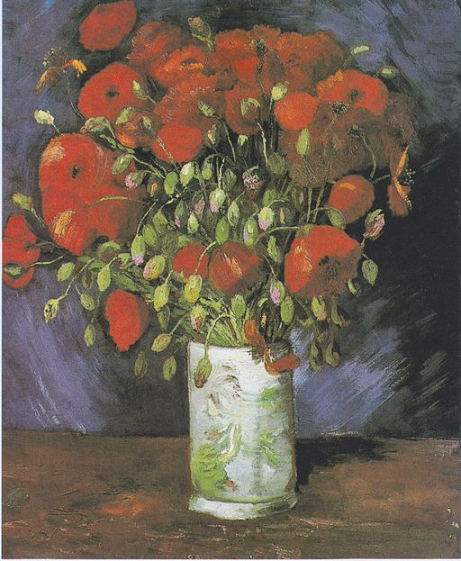

<head>
<meta charset="UTF-8" />
<meta name="keywords" content="drawing, painting" />
<meta name="description" content="drawings by Sunjy" />
<title>Sunjy</title>
<link rel="shortcut icon" type="image/x-icon" href="../../mImages/mCommon/favicon.ico" media="screen" />
<link rel="stylesheet" type="text/css" href="../../mCsses/mCommon/mCssA.css" />
<link rel="stylesheet" type="text/css" href="../../mCsses/mCommon/mCssB.css" />
<link rel="stylesheet" type="text/css" href="../../mCsses/mCommon/mCssC.css" />
<link rel="stylesheet" type="text/css" href="../../mCsses/mCommon/mCssD.css" />
<link rel="stylesheet" type="text/css" href="../../mCsses/mContent/mCssA.css" />
<link rel="stylesheet" type="text/css" href="../../mCsses/mContent/mCssB.css" />
<link rel="stylesheet" type="text/css" href="../../mCsses/mContent/mCssC.css" />
<link rel="stylesheet" type="text/css" href="../../mCsses/mContent/mCssD.css" />
</head>
<script type="text/javascript" src="../../mScripts/mContent/mContentAA.js" /></script>
<script type="text/javascript" src="../../mScripts/mContent/mContentAB.js" /></script>
<script type="text/javascript" src="../../mScripts/mContent/mContentAC.js" /></script>
<script type="text/javascript" src="../../mScripts/mContent/mContentAD.js" /></script>
<script type="text/javascript"></script> 
<script type="text/javascript">
document.write('<div class="mImgAbsolute"></div>');
/*
document.write('<p class="mFontSizeBColor" />From a white paper...</p>');
document.write('<table class="center"><tr><td>');
document.write('');
document.write('</td></tr></table>');
*/
</script>


<script type="text/javascript">
document.write('<p class="mFontSizeBColor" />Vase with Red Poppies</p>');
document.write('<p class="mFontSizeSColor" />By Vincent van Gogh. “Vase with Red Poppies” depicts one of the artist’s favorite subjects. Flowers were the subject of many of van Gogh’s paintings in Paris, and one of his many interests and fascinations.<br><br>Van Gogh wrote to his brother:<br><br>“You will see that by making a habit of looking at Japanese pictures, you will come to love to make up bouquets and do things with flowers all the more.”<br><br>Van Gogh advised his sister, Wil, to cultivate her garden to find joy and meaning in life. His paintings of sunflowers in vases are among his most well-known flower paintings. After he left Paris, van Gogh painted his second group of Sunflowers in Arles.<br><br>Vincent van Gogh made this painting of red poppies in Paris in 1886, where his friends sent bouquets weekly for his still-life paintings.<br><br>Van Gogh also purchased bouquets choosing flowers in a variety of colors for his paintings. In a letter to his sister Wil he wrote:<br><br>“Last year, I painted almost nothing but flowers so I could get used to colors other than grey – pink, soft or bright green, light blue, violet, yellow, glorious red.” <br><br>This impression was not accurate because while in Paris, he painted about 230 paintings, of which only 30 were based on flowers. His impression, however, underlines his passion for painting flowers as a way to develop his appreciation and understanding of color.<br><br>In 1976, the authenticity of this artwork was called into question. However, after nearly 40 years of speculation, Dutch experts and the Van Gogh Museum in Amsterdam have now verified that “Vase With Poppies” is a genuine Van Gogh.<br><br>The Wadsworth Atheneum Museum of Art conservation lab has also used advanced x-ray and infrared reflectograms to inspect the painting. The new technology revealed the presence of an earlier painting beneath the current composition, which appears to be have been a self-portrait.</p>');
document.write('<table class="center" /><tr><td>');
document.write('<br>Van Gogh wrote to his brother:<br><br>“You will see that by making a habit of looking at Japanese pictures, you will come to love to make up bouquets and do things with flowers all the more.”<br><br>Van Gogh advised his sister, Wil, to cultivate her garden to find joy and meaning in life. His paintings of sunflowers in vases are among his most well-known flower paintings. After he left Paris, van Gogh painted his second group of Sunflowers in Arles.<br><br>Vincent van Gogh made this painting of red poppies in Paris in 1886, where his friends sent bouquets weekly for his still-life paintings.<br><br>Van Gogh also purchased bouquets choosing flowers in a variety of colors for his paintings. In a letter to his sister Wil he wrote:<br><br>“Last year, I painted almost nothing but flowers so I could get used to colors other than grey – pink, soft or bright green, light blue, violet, yellow, glorious red.” <br><br>This impression was not accurate because while in Paris, he painted about 230 paintings, of which only 30 were based on flowers. His impression, however, underlines his passion for painting flowers as a way to develop his appreciation and understanding of color.<br><br>In 1976, the authenticity of this artwork was called into question. However, after nearly 40 years of speculation, Dutch experts and the Van Gogh Museum in Amsterdam have now verified that “Vase With Poppies” is a genuine Van Gogh.<br><br>The Wadsworth Atheneum Museum of Art conservation lab has also used advanced x-ray and infrared reflectograms to inspect the painting. The new technology revealed the presence of an earlier painting beneath the current composition, which appears to be have been a self-portrait." />');
document.write('</td></tr></table>');
</script>


